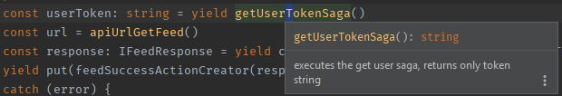
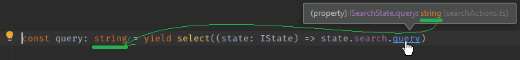

TS can't "return" types for interim yields, there are hacks of course.
I usually use JSDoc to indicate a return type so that the IDE can help me.
/**
* executes the get user saga, returns only the token string
* @returns {string}
*/
export default function* getUserTokenSaga() {
const user: CurrentUserState = yield getUserSaga()
const token: string = user.token || ''
return token
}Using inline docs (ctrl + Q) in WebStorm:

Store selector paths through yield has no type information.
The IDE will show you proper types on hover, so it's easy to copy-paste that:

I have a utils/redux folder where I keep (among other things) helper saga fragments. If you have the same code repeated over and over again in your saga, you can split that out into a small generator function.
if a non logged in user clicks on an action that requires login, we show a small notification with a link to the login page (and we break the current saga flow, forcing execution into the catch block).
export default function* loginRequiredNotificationSaga(message: string) {
const currentUser: CurrentUserState = yield select((state: IState) => state.user.current)
if (CurrentUserState.isLoggedOut(currentUser)) {
yield put(addNotLoggedInNotificationActionCreator({ message }))
throw new LoginRequiredError('Login required.')
}
}We usually have the try-catch-finally in all our flow functions (not just in the root saga), the other option is using a safe wrapper
When I use try-catch-finally:
yield put getFooSuccessActionyield put getFooFailureAction and/oryield put generalErrorActionyield put getFooFinishedActiontry {
const userToken = yield getUserTokenSaga()
const url = api.get(apiUrlGetCountriesStates({ country: countryId })
const states = yield call(url, userToken))
yield put(getStatesSuccessAction({ states, countryId }))
} catch (error) {
yield put(generalErrorAction({ error }))
} finally {
yield put(getStatesFinishedAction())
}A typical use case for finally is cleaning up the state, setting isLoading
to false, but of course you can do the same in both success and failure.
yield put errorNotification or similar)If you expect no errors or the error may have no visible outcome then still log the error to the console. I use the simple loglevel library for logging (based on environment).
Our general error handler (caught with yield takeEvery(GENERAL_ERROR, generalErrorFlow)) looked like this:
function* generalErrorFlow(action: IGeneralErrorAction) {
const error = action.payload.error
if (error instanceof LoginRequiredError) {
return
}
const isServerError = typeof error.code === 'number'
// setup default messages (not yet translated)
const title = 'Something went wrong :('
const fallbackMessage = 'An unknown error has occurred.'
const caption = 'Oh no! I will try again later!'
let description = isServerError ? error.message || fallbackMessage : fallbackMessage
// we can add meaningful messages for some low level errors
// (errors that are not triggered by generic try-catches or by api error responses)
if (error.message === 'Network Error') {
description = _t('notificationCenterLabels.networkError')
}
// a saga error handler would still catch and rethrow,
// so logging to error or throwing here is pointless
if (!isServerError) {
log.warn(`Unhandled javascript error. (${error.name}, ${error.message})`)
}
yield put(
addNotificationActionCreator({ title, description, type: NotificationType.Alert })
)
}As one can see the code above does some ugly heuristics (good old duck typing) - it should be fairly easy to differenciate proper errors with error types (like the newer LoginRequiredError), at least for errors thrown via our axios wrapper (versus "real" javascript errors). I leave this exercise to the reader this time.